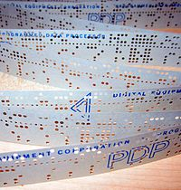

ЗИТ-151
ЗИТ-151 е наименованието на първата промишлено произведена серия българска електронно изчислителна машина (ЕИМ). Произвежда се от Завода за изчислителна техника (ЗИТ) в София по лиценз на японската „Facom-230–30“ на фирмата „Фуджицу“. Внедряването ѝ за производство започва с обучение на специалисти, предоставяне на пълна производствена документация и готови комплекти компоненти и шкафове за монтаж доставени от Япония. В ЗИТ се осъществяват само връзките между отделните контактни пера на платките с т. нар. метод "репинг". Тази технология премахва запояването и представлява плътно навиване с пистолет на проводник върху контактното изходно перо на куплунга за всяка платка. ЕИМ е изградена на базата на полупроводникови елементи - диоди и транзистори. До 1969 г. са произведени опитните образци, като е усвоено цялото производство по технологията на лиценза с внесени от Япония измервателни уреди, контролна и тестваща апаратура, градивни елементи и периферни устройства. При преминаване към производствена серия елементната база е заменена с българска - производство на Завода за полупроводници - Ботевград, а използваните магнитни материали са заменени с такива произвеждани в България и внос от ГДР.
Компютърна конфигурация
- Операторски пулт с вход и изход на електрическа пишеща машина;
- Периферни входни устройства - четец на перфолента, четец на перфокарти;
- Изходни периферни устройства - перфоратор на перфокарти, перфоратор на перфолента, широк печат;
- Външни запаметяващи устройства - запаметяващи устройства на магнитна лента (ЗУМЛ) (6 бр.);
- Стандартна ЕИМ- Шкаф захранване, шкаф ЦПУ, шкаф магнитна памет (на ферити), шкаф управление на периферните устройства;
- Променливотоков стабилизатор на напрежение с мощност 25 kW.
Възможности на ЕИМ
ЗИТ 151 притежава качествата на лицензния компютър Facom 230-30. Като използва постигнатото с модела Facom 231, новият модел ЕИМ притежава по-високи възможности. Чрез функционални разширения се постига 10 пъти по-висока скорост на обработката на данни. За 10 разрядна дума е постигната средна скорост на аритметичните действия :
- събиране - 58,3 μs
- изваждане - 82,5 μs
- умножение - 850 μs
При обработка на 10 разрядна дума с плаваща запетая са постигнати:
- събиране - 150 μs
- изваждане - 200 μs
- умножение - 1400 μs